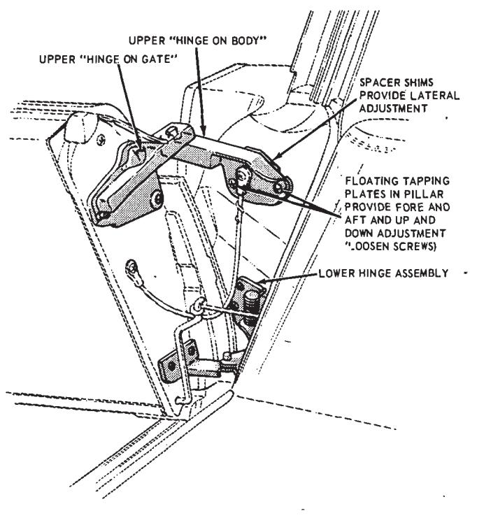
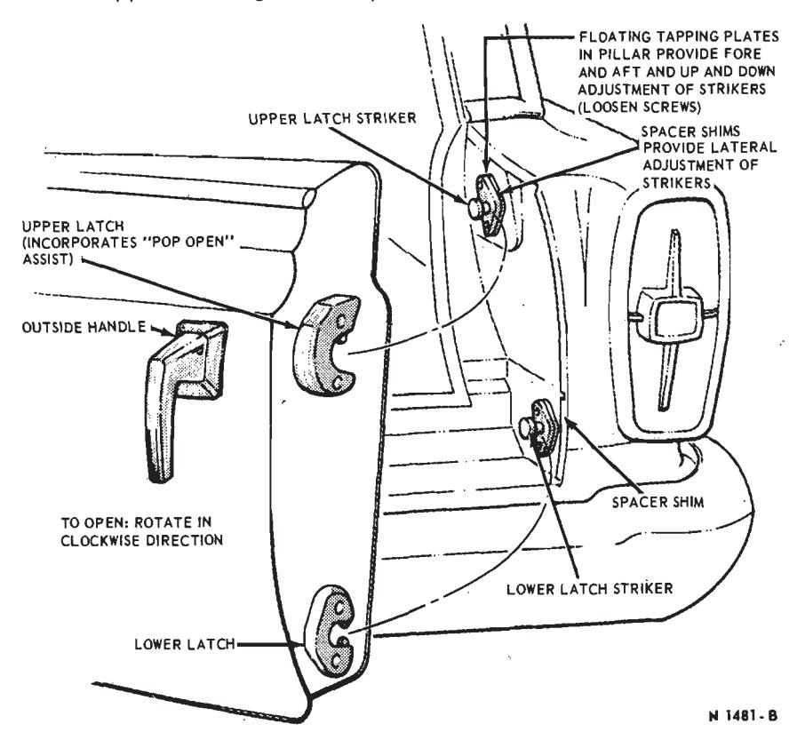
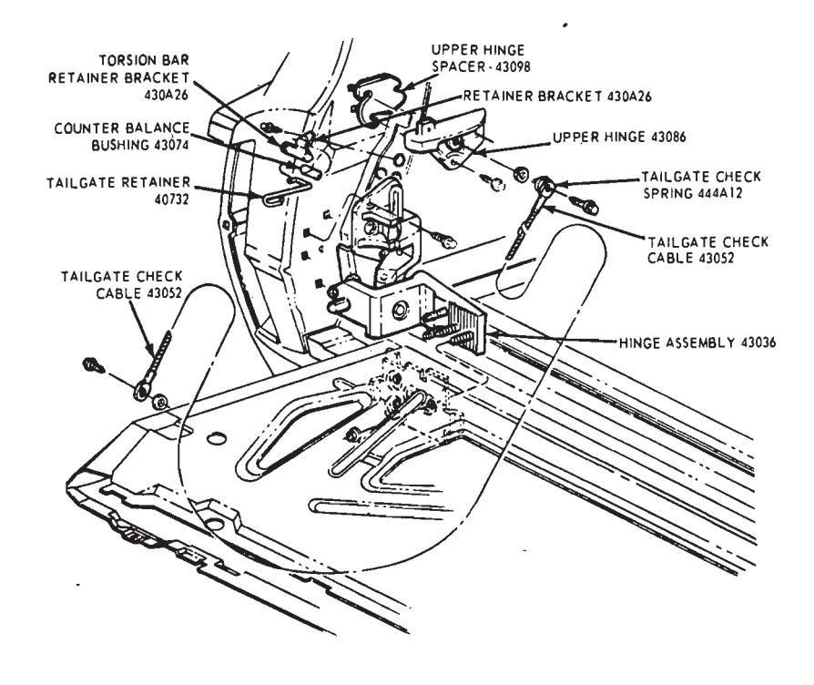
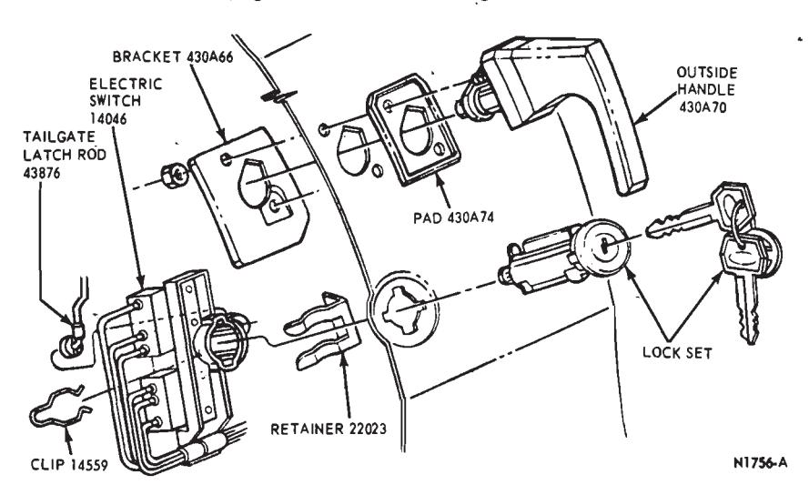
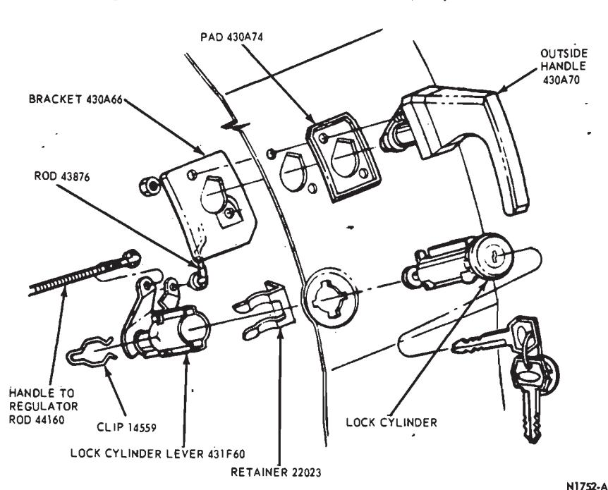
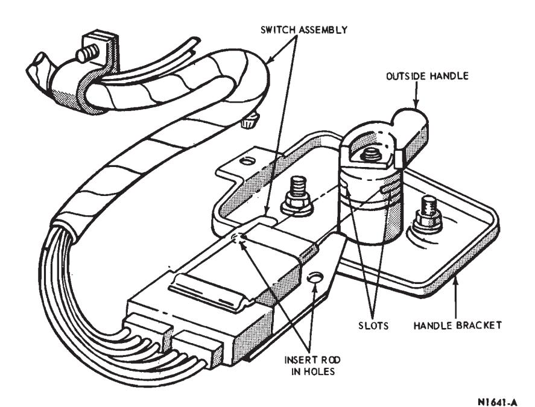
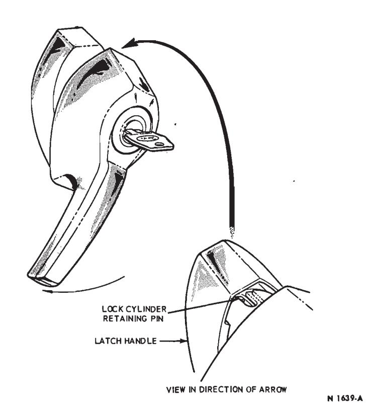
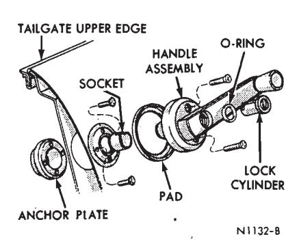
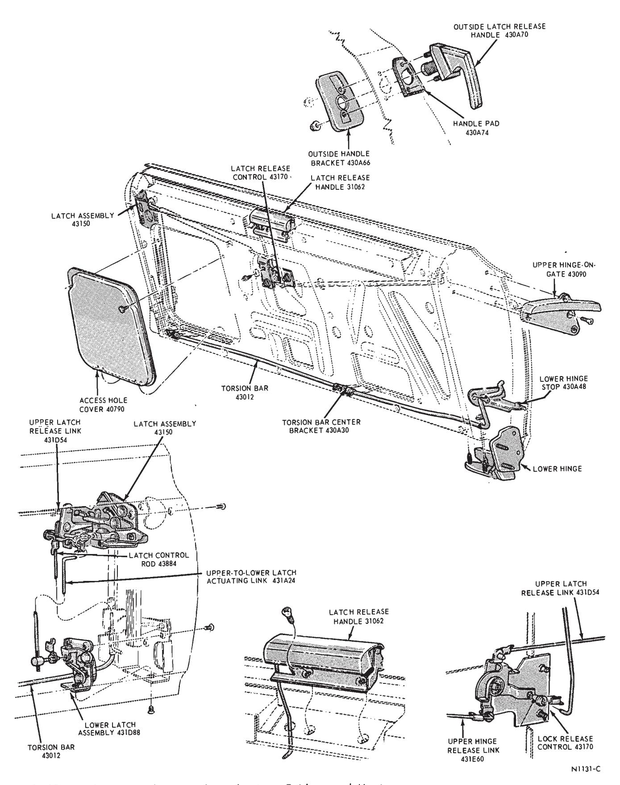
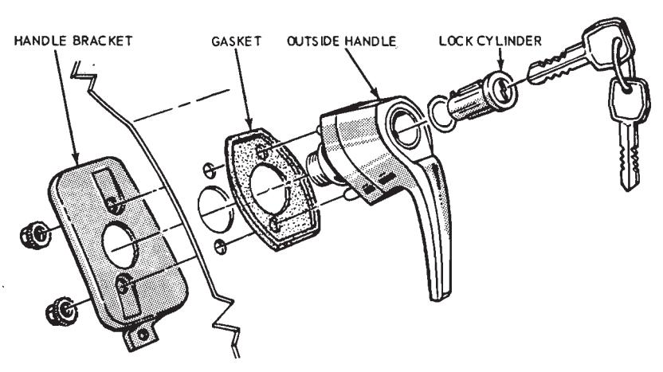

Tailgates, Single-Action and Dual-Action · 43-06-05
Tailgate Lower Hinge — Ford, Mercury and Meteor
Removal
-
Open the tailgate as a drop gate and place a support under the tailgate.
-
Remove the tailgate inside cover and watershield.
-
Remove the wire clip from the hinge.
-
Move the tailgate glass to the up position.
-
Mark the location of the hinge and remove three nuts retaining the hinge to the tailgate.
-
Remove four hinge-to-body attaching bolts (Fig. 6).
-
Remove the torsion bar retainer bracket and remove the hinge. Use caution when working with the torsion bar as the bar is under tension when installed.
-
Position the hinge to the body and tailgate, and install the retaining nuts and attaching bolts.
-
Position the torsion bar and re- tainer to the body with Tool T65P-44890-A, and install the retainer bracket attaching screws.

Fig. 4 — Upper Left Hinge Assembly — Fairlane and Montego\
Fig. 5 — Tailgate Lock Striker Adjustment — Fairlane and Montego\ -
Install the wire clip on the hinge.
-
Adjust the tailgate and tighten the attaching bolts and retaining screws.
-
Install the watershield and tailgate inside cover.
Tailgate Torsion Bar — Ford, Mercury and Meteor
Removal
- Open the tailgate as a door and remove two brackets retaining the torsion bar to the bottom of the tailgate (Fig. 1).
- Remove the two torsion bar bracket retaining screws from the left end of the tailgate (Fig. 1).
- Remove the torsion bar from the tailgate, and remove the bracket from the torsion bar.
Installation
- Position the bracket on the torsion bar.
- Position the torsion bar to the tailgate.
- Install the two bracket retaining screws.
- Install the two brackets retaining the torsion bar to the bottom of the tailgate.
Tailgate Upper Hinge-on Gate — Ford, Mercury and Meteor
Removal
-
Remove the tailgate inside cover and watershield from the tailgate.
-
Disconnect the upper hinge link from the hinge (Fig. 6).
-
Remove four screws attaching the upper hinge to the tailgate and remove the hinge.
-
Remove the link clip and bushing from the hinge.
-
Install the link clip and bushing on the hinge.
-
Position the hinge to the tailgate and install the four attaching screws.
-
Connect the upper hinge link to the hinge.
-
Install the watershield and inside cover on the tailgate.

Fig. 6 — Tailgate Hinges — Ford, Mercury and Meteor\
Tailgate Upper Latch — Ford, Mercury and Meteor
Removal
- Remove the tailgate inside cover and watershield.
- Disconnect the four links from the latch (Fig. 1).
- Remove the tailgate outside handle.
- Remove three latch attaching screws and remove the latch.
- Transfer the rod clips to the new latch.
Installation
- Position the latch in the tailgate and install the three attaching screws.
- Install the tailgate outside handle.
- Connect the rods to the latch.
- Install the watershield and inside cover on the tailgate.
Tailgate Lower Latch — Ford, Mercury and Meteor
Removal
- Remove the interior trim panel and access cover from the tailgate.
- Disconnect the latch actuator link from the lower latch (Fig. 1).
- Remove three lower latch attaching screws and remove the lower latch from the tailgate.
- Remove the latch actuator link clip from the lower latch.
Installation
- Install the latch actuator link clip in the lower latch.
- Position the lower latch to the tailgate and install the three attaching screws.
- Adjust and connect the latch actuator link to the lower latch.
- Adjust the lower latch striker, if necessary.
- Install the access cover and trim panel on the tailgate.
Tailgate Weatherstrip — Ford, Mercury and Meteor
- Remove the auxiliary rear floor panel.
- Remove the tailgate opening upper rear garnish moulding.
- Remove the right and left upper inner rear finish panels.
- Remove the weatherstrip from the flange.
- Install the weatherstrip on the flange.
- Install the right and left upper inner rear finish panels, upper rear garnish moulding and the auxiliary rear floor pan.
Tailgate Window Switch
Removal
- Remove the tailgate inside cover and watershield.
- Disconnect the tailgate latch rod from the electric switch (Fig. 7).
- Remove the electric switch clip (Fig. 4).
- Remove the lock set retainer (Fig. 7).
- Disconnect the switch wires and remove the wire clips. Then, remove the switch and wire assembly from the tailgate.
Installation
- Position the switch and wire assembly in the tailgate. Connect the wires and install the wire clips.
- Position the switch to the lock cylinder and install the retainer and clip (Fig. 7).
- Connect the tailgate latch rod to the switch.
- Install the watershield and inside cover on the tailgate.
Tailgate Outside Handle — Ford, Mercury and Meteor
Remove the inside cover and watershield. Then, disconnect the rod and remove the handle retaining nuts (Fig.
Tailgate Lock Cylinder — Ford, Mercury and Meteor
Removal
- Remove the tailgate inside cover and watershield.
- Disconnect the rods from the lock cylinder lever (Fig. 8).
- Remove the lock cylinder clip and remove the lock cylinder from the tailgate.
- Insert the lock cylinder into the tailgate and lever, and install the clip.
- Connect the rods to the lock cylinder lever.
- Install the watershield and tailgate inside cover panel.
Tailgate Latch Release Control
Removal
- Remove the interior trim panel from the tailgate.
- Raise the glass part way out of the tailgate.
- Disconnect the rods from the latch release control (Fig. 1).
- Remove three latch release control attaching screws, and remove the control from the tailgate.
Installation
-
Position the latch release control to the tailgate and install the three attaching screws snug.
-
Connect the rods to the latch release control.
-
Lower the glass and adjust the latch release control.
-
Install the trim panel on the tailgate.

Fig. 7 — Tailgate Window Switch — Ford, Mercury and Meteor\
Fig. 8 — Tailgate Outside Handle and Lock Cylinder — Ford, Mercury and Meteor\
Dual-Action Tailgate Power Window Switch and Lock Cylinder — Fairlane and Montego
Removal
- Remove the interior trim panel and access cover from the tailgate.
- Remove the glass and channel assembly from the tailgate.
- Remove the window switch from the latch outside handle. This can be accomplished by inserting a small steel rod into the two holes in the switch assembly (Fig. 9) and spreading the spring clips outward. Then, slide the switch assembly off the latch outside handle.
- Turn the key and latch handle to the full clockwise position. Then, depress the lock cylinder retaining pin (Fig. 10) and remove the lock cylinder from the latch outside handle.
Installation
- Move the switch actuating lever at the back of the latch handle (inside tailgate) to the center position.
- Insert the lock cylinder into the latch handler and engage it. Remove the key from the lock cylinder to be sure it is engaged with the handle.
- Position the switch assembly to the latch handle and slide the switch into the slots of the handle.
- Install the tailgate glass, and install the access cover and interior trim panel on the tailgate.
- Clean the old sealer from the tailgate cover panel and apply new sealer.
- Install the tailgate cover panel to the tailgate.
- Connect the tailgate hinge supports and remove the temporary support.
Tailgate Manual Window Handle and Lock Cylinder — Fairlane and Montego
Removal
-
With the tailgate window in the closed position, unlock the tailgate handle, and rotate the handle assembly to reveal the mounting screws (Fig. 11).
-
Remove the handle mounting screws, and then remove the handle assembly and pad.
-
To remove the lock cylinder turn the key in the cylinder to align the cylinder locking pin with the access hole in the handle assembly. Depress the locking pin and remove the lock cylinder.

Fig. 9 — Tailgate Power Window Switch Installation — Fairlane and Montego\
Fig. 10 — Tailgate Lock Cylinder Removal — Fairlane and Montego\
Installation
- To replace the lock cylinder, transfer the O-rings, and then with the key in the cylinder, install the lock cylinder in the handle assembly.
- If the window regulator has been replaced, it may be necessary to reposition the handle assembly so that it hangs in a vertical position, with the tailgate window in a closed position. To adjust the handle position, remove the snap ring and socket from the window regulator stem, and then install the socket with the notch at the top.
- Install the pad and handle assembly.
Dual-Action Tailgate Hinges — Fairlane and Montego
Upper Left Hinge
- Open the tailgate (horizontally, as a dropgate) and scribe a location mark around that part of hinge to be replaced.
- Remove the hinge retainer screws.
- Position the hinge to the scribe marks and install the retainer screws.
Lower Left Hinge
- Open the tailgate (horizontally, as a dropgate) and position a support under the hinge side of the gate.
- Remove the tailgate door check. Raise the tailgate partially and remove the torsion bar retainer link from the body.
- Scribe the hinge location on the body and the tailgate. Remove the hinge retainer screws and remove the hinge.
- Position the hinge to the body and tailgate scribe marks and install the hinge retainer screws.
- Close the tailgate and check for proper lower hinge alignment. Adjust the hinge if necessary.
- Open the tailgate partially and install the torsion bar retainer link to the body.
- Install the tailgate door check.
Dual-Action Tailgate Latches — Fairlane and Montego
Right Lower Latch
- Open the tailgate (side opening). Remove the tailgate trim panel, watershield and access panel.
- Disconnect the linkage from the latch. Remove the three retaining screws and remove the latch.
- Transfer the linkage retainer clips to the new latch. Position the latch in the gate and install the retainer screws.
- Install the linkage to the latch. Install the access cover, watershield and trim panel.
Right Upper Latch
- Open the tailgate (side opening). Remove the tailgate trim panel, watershield and access panel.
- Engage the upper latch pawl to the closed position and raise the window partially out of the gate. Remove the regulator arms from the window regulator channel and remove the window assembly.
- Disconnect the linkage at the upper latch. Remove the wire connector from the upper latch safety switch.
- Remove the right guide upper retainer bolt. Remove the three screws retaining the latch and remove the latch assembly.
- Transfer the linkage retainer clips and the safety switch to the new latch assembly.
- Position the latch in the gate and install the latch retainer screws. Install the window guide upper retainer bolt.
- Connect the wire connector to the switch and connect the linkage to the latch.
- Position the window assembly in the gate and install the regulator arms to the regulator channel. Close latch pawl to engage the switch and lower the window into the tailgate.
- Install the tailgate access panel, watershield, and trim panel. Open the upper latch and close the tailgate. Check the latch alignment to the striker. Adjust the latch striker if necessary.
Dual-Action Tailgate Torsion Bar — Fairlane and Montego
Removal
- Remove the tailgate trim panel, watershield and access cover.
- Move the tailgate glass out partially by closing the right upper latch pawl and turning the key in the tailgate cylinder.
- Remove the latch control bell-crank assembly and window lower stop.
- Loosen the window regulator motor harness to gain slack at the tailgate-to-body location.
- Raise the tailgate partially and remove the torsion rod retainer link from the body (2 screws).
- With an assistant, remove the left lower hinge pivot bolt. Unlatch the right lower latch, remove one check cable retainer screw from each side and move the tailgate assembly away from the body opening. Place the tailgate on an appropriate stand approximately bumper high.
- Remove the torsion bar retainer bracket and remove the torsion bar from the left side of the gate (Fig. 12).
Installation
- Place the torsion bar in its respective mounting position and install the torsion bar right retainer bracket.
- With an assistant, position the tailgate assembly to the body opening. Engage the right lower latch to the striker plate. Install the left hinge pivot bolt and install the check cable retainer screws.
- Install the torsion bar retainer link to the body.
- Position the motor wiring harness in its original position.
- Install the window lower stop and lock the bellcrank assembly:
- Lower the window in the tailgate to where the top edge of the glass is even with the weatherstrip and adjust the lower stop if necessary.
- Install the tailgate access cover, watershield and trim panel.
Dual-Action Tailgate Latch Release Handle — Fairlane and Montego
- Remove the rod retainer from the rod at the latch release handle.
- Remove two screws attaching the latch release handle to the tailgate. Disengage the handle from the rod and remove the handle.
- Position the latch release handle to the tailgate and rod, and install the two attaching screws.
- Install the rod retainer at the release handle.
Dual-Action Tailgate Latch Release Control — Fairlane and Montego
Removal
-
Remove the interior trim panel from the tailgate.
-
Raise the glass part way out of the tailgate.

Fig. 11 — Tailgate Window Handle and Lock Cylinder — Fairlane and Montego\ -
Disconnect the three links (rods) from the latch release control (Fig. 12).
-
Remove three latch release control attaching screws, and remove the control from the tailgate.
Installation
- Position the latch release control to the tailgate and install the three attaching screws snug.
- Connect the three links (rods) to the latch release control.
- Lower the glass and adjust the latch release control.
- Install the trim panel on the tailgate.
Dual-Action Tailgate Outside Handle — Fairlane and Montego
Removal
- Remove the interior trim panel and access cover from the tailgate.
- Remove the glass and channel assembly from the tailgate.
- Remove the window switch assembly from the latch handle. This can be accomplished by inserting a small steel rod into the two holes in the switch assembly and spreading the spring clips outward. Then, slide the switch assembly off the latch handle (Fig. 9).
- Remove two nuts retaining the handle to the tailgate. Remove the handle bracket and handle from the tailgate (Fig. 13).
- Remove the lock cylinder from the handle.
Installation
-
Install the lock cylinder in the outside handle.

Fig. 12 — Dual-Action Tailgate Latch Mechanism — Fairlane and Montego\
Fig. 13 — Tailgate Outside Handle Installation — Fairlane and Montego\ -
Position the outside handle and handle bracket to the tailgate and install the two retaining nuts (Fig. 13).
-
Position the switch assembly to the slots in the outside handle and slide the switch assembly into place.
-
Install the glass and channel assembly.
-
Install the access cover and the trim panel on the tailgate.